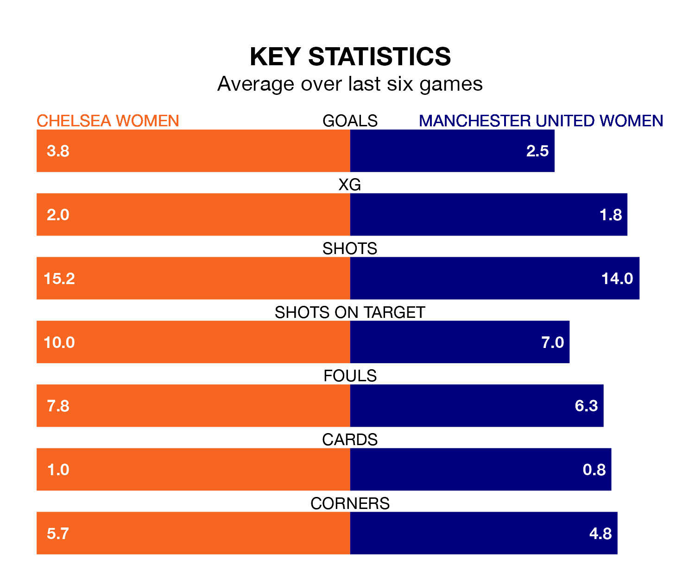

Chelsea Women host Manchester United Women in Sunday lunchtime's match at Kingsmeadow looking to bounce back from defeat last time out in FA Women's Super League.
The Blues, who sit top of the league after 10 games, fell to a 0-3 away defeat to Bristol City Women on December 17.
They face a Manchester United side who also lost their last match, a 2-1 defeat to Liverpool Women, and who sit fourth in the table.
With 32 goals in 10 games so far this season, Chelsea are the league's highest scorers with 3.2 goals per game. And they are conceding fewer than average, letting in 11 goals at a rate of 1.1 per game.
Manchester United are also above average scorers, with 2.5 goals per game, compared to a league average of 1.7. They have conceded 1.1 goals per game.
In Mary Earps, the Red Devils can rely on one of the league's safest pair of hands. She has kept four clean sheets in her 10 appearances this season, and no 'keeper has prevented the opposition scoring more often in FA Women's Super League.
In the Blues' net, Ann-Katrin Berger has two clean sheets in five games. She has conceded a goal every 64 minutes, 40% more often than the 90 minutes between goals for Earps.
The hosts are in fantastic form in FA Women's Super League, with five wins and one loss from their last six games.
With three wins and a draw over that period, the away team's form is worse – they have taken 10 points from 18, compared to Chelsea's 15.
In the last three years, Chelsea and Manchester United have played each other on six occasions. Chelsea won all of them.
On average, the Blues scored 3.0 goals and the Red Devils 0.8 in those matches.
Their last meeting was on May 14, when Chelsea won 1-0 at home.
Updated: 13:38 (UTC), 10/01/24